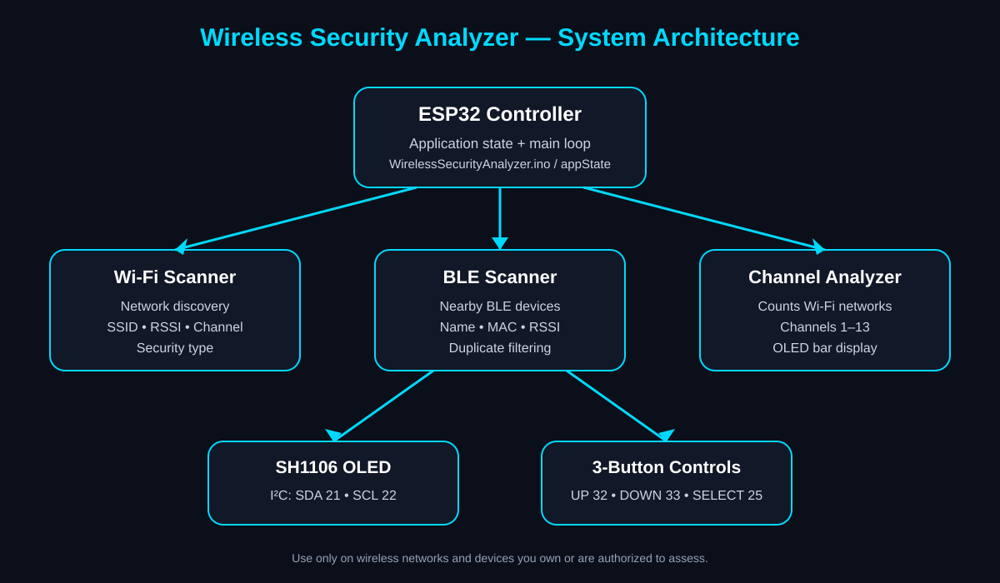

PROJECT 03
Wireless Security Analyzer
A portable ESP32-based wireless analysis project with Wi-Fi scanning, BLE discovery, channel analysis, and an OLED-driven menu interface.
Project Overview
This project is structured as a portable wireless analyzer running on an ESP32. The firmware uses separate modules for application state, menus, display handling, button input, Wi-Fi scanning, BLE scanning, and Wi-Fi channel analysis.
The main interface is a 128×64 SH1106 OLED controlled through I²C, with three physical buttons used for navigation and selection.
Key Features
System Architecture

Hardware & Pin Configuration
| Component | Connection / Role |
|---|---|
| ESP32 | Main controller and built-in Wi-Fi/BLE radio platform |
| SH1106 OLED | I²C display; SDA GPIO 21, SCL GPIO 22 |
| UP Button | GPIO 32, INPUT_PULLUP |
| DOWN Button | GPIO 33, INPUT_PULLUP |
| SELECT Button | GPIO 25, INPUT_PULLUP |
How It Works
- The ESP32 initializes I²C, the OLED display, and the three buttons.
- The firmware enters the main menu and tracks the current screen using an application-state enum.
- Wi-Fi scanning switches the ESP32 to station mode, performs a network scan, and presents a selectable list.
- Selecting a Wi-Fi network opens a detail screen with RSSI, channel, and security information.
- BLE scanning discovers nearby BLE advertisements, stores up to 25 unique devices, and provides a detail view.
- The channel analyzer counts detected Wi-Fi networks by channel and renders a simple bar visualization.
Source Code
Read-only project source. No browser run button is provided because this is ESP32 hardware firmware.
WirelessSecurityAnalyzer.ino
#include <Wire.h>
#include <WiFi.h>
#include "display.h"
#include "buttons.h"
#include "menu.h"
#include "appState.h"
#include "wifiScanner.h"
#include "channelAnalyzer.h"
#include "bleScanner.h"
void setup()
{
Serial.begin(115200);
Wire.begin(21,22);
displayInit();
buttonsInit();
bootScreen();
delay(2000);
currentScreen = MAIN_MENU;
drawMenu();
}
void loop()
{
switch(currentScreen)
{
case MAIN_MENU:
menuLoop();
break;
case WIFI_SCAN:
startWiFiScan();
break;
case WIFI_LIST:
case WIFI_DETAILS:
wifiScannerLoop();
break;
case CHANNEL_ANALYZER:
startChannelAnalyzer();
currentScreen = CHANNEL_ANALYZER_VIEW;
break;
case CHANNEL_ANALYZER_VIEW:
channelAnalyzerLoop();
break;
case BLE_SCAN:
startBLEScan();
currentScreen = BLE_LIST;
break;
case BLE_LIST:
bleScannerLoop();
break;
default:
break;
}
}appState.cpp
#include "appState.h"
ScreenState currentScreen = MAIN_MENU;appState.h
#ifndef APPSTATE_H
#define APPSTATE_H
enum ScreenState
{
BOOT_SCREEN,
MAIN_MENU,
WIFI_SCAN,
WIFI_LIST,
WIFI_DETAILS,
BLE_SCAN,
BLE_LIST,
CHANNEL_ANALYZER,
CHANNEL_ANALYZER_VIEW,
HISTORY,
SETTINGS,
ABOUT
};
extern ScreenState currentScreen;
#endifbleScanner.cpp
#include "bleScanner.h"
#include <NimBLEDevice.h>
#include "display.h"
#include "menu.h"
#include "buttons.h"
#include "appState.h"
// -------------------- CONFIG --------------------
#define MAX_BLE_DEVICES 25
// -------------------- STORAGE --------------------
String bleName[MAX_BLE_DEVICES];
String bleAddr[MAX_BLE_DEVICES];
int bleRSSI[MAX_BLE_DEVICES];
int bleCount = 0;
int selectedIndex = 0;
bool scanDone = false;
// -------------------- FORWARD DECLARATION --------------------
void drawBLEList();
// -------------------- SCAN CALLBACK --------------------
class MyAdvertisedDeviceCallbacks
{
public:
void onResult(NimBLEAdvertisedDevice* device)
{
if (bleCount >= MAX_BLE_DEVICES) return;
std::string addrStd = device->getAddress().toString();
String addr = String(addrStd.c_str());
// avoid duplicates
for (int i = 0; i < bleCount; i++)
{
if (bleAddr[i] == addr)
return;
}
if (device->haveName())
bleName[bleCount] = device->getName().c_str();
else
bleName[bleCount] = "Unknown";
bleAddr[bleCount] = addr;
bleRSSI[bleCount] = device->getRSSI();
bleCount++;
}
};
MyAdvertisedDeviceCallbacks callbacks;
// -------------------- START SCAN --------------------
void startBLEScan()
{
oled.clearBuffer();
oled.setFont(u8g2_font_ncenB08_tr);
oled.drawStr(10, 30, "Scanning BLE...");
oled.sendBuffer();
bleCount = 0;
selectedIndex = 0;
scanDone = false;
static bool initDone = false;
if (!initDone)
{
NimBLEDevice::init("");
initDone = true;
}
NimBLEScan* scan = NimBLEDevice::getScan();
// IMPORTANT FIX for ESP32 core 3.3.7
scan->setScanCallbacks((NimBLEScanCallbacks*)&callbacks, false);
scan->setActiveScan(true);
scan->setInterval(45);
scan->setWindow(15);
scan->start(5, false);
scan->stop();
scanDone = true;
drawBLEList();
}
// -------------------- DRAW LIST --------------------
void drawBLEList()
{
oled.clearBuffer();
oled.setFont(u8g2_font_6x12_tr);
oled.drawStr(0, 10, "BLE Devices");
int total = bleCount + 1;
int start = 0;
if (selectedIndex > 3)
start = selectedIndex - 3;
for (int i = 0; i < 5; i++)
{
int item = start + i;
if (item >= total) break;
if (item == selectedIndex)
oled.drawStr(0, 24 + i * 10, ">");
if (item == 0)
{
oled.drawStr(10, 24 + i * 10, "Back");
}
else
{
String name = bleName[item - 1];
if (name.length() > 14)
name = name.substring(0, 14);
oled.drawStr(10, 24 + i * 10, name.c_str());
}
}
oled.sendBuffer();
}
// -------------------- LOOP --------------------
void bleScannerLoop()
{
if (!scanDone)
return;
if (upPressed())
{
if (selectedIndex > 0)
selectedIndex--;
drawBLEList();
}
if (downPressed())
{
if (selectedIndex < bleCount)
selectedIndex++;
drawBLEList();
}
if (selectPressed())
{
// BACK
if (selectedIndex == 0)
{
currentScreen = MAIN_MENU;
drawMenu();
return;
}
int id = selectedIndex - 1;
// DEVICE DETAILS SCREEN
oled.clearBuffer();
oled.setFont(u8g2_font_6x12_tr);
oled.drawStr(0, 10, bleName[id].c_str());
oled.drawLine(0, 14, 128, 14);
oled.setCursor(0, 28);
oled.print("RSSI: ");
oled.print(bleRSSI[id]);
oled.setCursor(0, 44);
oled.print("MAC:");
oled.drawStr(0, 58, bleAddr[id].c_str());
oled.sendBuffer();
while (!selectPressed())
delay(10);
while (selectPressed())
delay(10);
drawBLEList();
}
}bleScanner.h
#ifndef BLE_SCANNER_H
#define BLE_SCANNER_H
void startBLEScan();
void bleScannerLoop();
void drawBLEList();
#endifbuttons.cpp
#include "buttons.h"
#include <Arduino.h>
void buttonsInit()
{
pinMode(BTN_UP, INPUT_PULLUP);
pinMode(BTN_DOWN, INPUT_PULLUP);
pinMode(BTN_SELECT, INPUT_PULLUP);
}
bool upPressed()
{
if(digitalRead(BTN_UP)==LOW)
{
delay(180);
return true;
}
return false;
}
bool downPressed()
{
if(digitalRead(BTN_DOWN)==LOW)
{
delay(180);
return true;
}
return false;
}
bool selectPressed()
{
if(digitalRead(BTN_SELECT)==LOW)
{
delay(180);
return true;
}
return false;
}buttons.h
#ifndef BUTTONS_H
#define BUTTONS_H
#define BTN_UP 32
#define BTN_DOWN 33
#define BTN_SELECT 25
void buttonsInit();
bool upPressed();
bool downPressed();
bool selectPressed();
#endifchannelAnalyzer.cpp
#include <WiFi.h>
#include "channelAnalyzer.h"
#include "display.h"
#include "buttons.h"
#include "menu.h"
#include "appState.h"
int channelCount[14];
void drawChannels()
{
oled.clearBuffer();
oled.setFont(u8g2_font_6x12_tr);
oled.drawStr(0,10,"Channel Analyzer");
for(int i=1;i<=5;i++)
{
char line[25];
sprintf(line,"CH%2d : %2d",i,channelCount[i]);
oled.drawStr(0,18+i*9,line);
int bar = channelCount[i] * 10;
if(bar > 55)
bar = 55;
oled.drawBox(65,12+i*9,bar,6);
}
oled.sendBuffer();
}
void startChannelAnalyzer()
{
oled.clearBuffer();
oled.setFont(u8g2_font_ncenB08_tr);
oled.drawStr(18,30,"Scanning...");
oled.sendBuffer();
memset(channelCount,0,sizeof(channelCount));
WiFi.mode(WIFI_STA);
WiFi.disconnect(true,true);
delay(500);
int n = WiFi.scanNetworks();
for(int i=0;i<n;i++)
{
int ch = WiFi.channel(i);
if(ch>=1 && ch<=13)
channelCount[ch]++;
}
drawChannels();
}
void channelAnalyzerLoop()
{
if(selectPressed())
{
currentScreen = MAIN_MENU;
drawMenu();
}
}channelAnalyzer.h
#ifndef CHANNELANALYZER_H
#define CHANNELANALYZER_H
void startChannelAnalyzer();
void channelAnalyzerLoop();
#endifdisplay.cpp
#include "display.h"
U8G2_SH1106_128X64_NONAME_F_HW_I2C oled(U8G2_R0);
void displayInit()
{
oled.begin();
oled.clearBuffer();
oled.sendBuffer();
}
void bootScreen()
{
oled.clearBuffer();
oled.setFont(u8g2_font_ncenB10_tr);
oled.drawStr(10,20,"Portable");
oled.drawStr(8,38,"Wireless");
oled.drawStr(16,56,"Analyzer");
oled.sendBuffer();
}
void drawMainMenu()
{
oled.clearBuffer();
oled.setFont(u8g2_font_6x12_tr);
oled.drawStr(0,10,"====================");
oled.drawStr(5,24,"Wireless Analyzer");
oled.drawStr(0,36,"====================");
oled.drawStr(5,50,"> WiFi Scanner");
oled.drawStr(5,62," BLE Scanner");
oled.sendBuffer();
}display.h
#ifndef DISPLAY_H
#define DISPLAY_H
#include <Arduino.h>
#include <U8g2lib.h>
extern U8G2_SH1106_128X64_NONAME_F_HW_I2C oled;
void displayInit();
void bootScreen();
void drawMainMenu();
#endifmenu.cpp
#include "menu.h"
#include "display.h"
#include "buttons.h"
#include "appState.h"
const char* menuItems[] =
{
"WiFi Scanner",
"BLE Scanner",
"Channel Analyzer",
"Scan History",
"Settings",
"About"
};
int menuIndex = 0;
void drawMenu()
{
oled.clearBuffer();
oled.setFont(u8g2_font_6x12_tr);
oled.drawStr(20,10,"Main Menu");
for(int i=0; i<6; i++)
{
if(i == menuIndex)
oled.drawStr(0,22+i*10,">");
oled.drawStr(10,22+i*10,menuItems[i]);
}
oled.sendBuffer();
}
void menuLoop()
{
if(upPressed())
{
if(menuIndex > 0)
menuIndex--;
drawMenu();
}
if(downPressed())
{
if(menuIndex < 5)
menuIndex++;
drawMenu();
}
if(selectPressed())
{
switch(menuIndex)
{
case 0:
currentScreen = WIFI_SCAN;
break;
case 1:
currentScreen = BLE_SCAN;
break;
case 2:
currentScreen = CHANNEL_ANALYZER;
break;
case 3:
currentScreen = HISTORY;
break;
case 4:
currentScreen = SETTINGS;
break;
case 5:
currentScreen = ABOUT;
break;
}
}
}menu.h
#ifndef MENU_H
#define MENU_H
void menuLoop();
void drawMenu();
#endifwifiScanner.cpp
#include <WiFi.h>
#include "wifiScanner.h"
#include "display.h"
#include "buttons.h"
#include "menu.h"
#include "appState.h"
WiFiState wifiState =
{
0,
0,
false
};
String getSecurity(wifi_auth_mode_t type)
{
switch(type)
{
case WIFI_AUTH_OPEN: return "OPEN";
case WIFI_AUTH_WEP: return "WEP";
case WIFI_AUTH_WPA_PSK: return "WPA";
case WIFI_AUTH_WPA2_PSK: return "WPA2";
case WIFI_AUTH_WPA_WPA2_PSK: return "WPA/WPA2";
case WIFI_AUTH_WPA3_PSK: return "WPA3";
default: return "UNKNOWN";
}
}
void startWiFiScan()
{
oled.clearBuffer();
oled.setFont(u8g2_font_ncenB08_tr);
oled.drawStr(20,28,"Scanning...");
oled.sendBuffer();
WiFi.mode(WIFI_STA);
WiFi.disconnect(true,true);
delay(500);
wifiState.networkCount = WiFi.scanNetworks();
wifiState.selectedIndex = 0;
wifiState.detailScreen = false;
currentScreen = WIFI_LIST;
drawWiFiList();
}
void drawWiFiList()
{
oled.clearBuffer();
oled.setFont(u8g2_font_6x12_tr);
oled.drawStr(0,10,"WiFi Networks");
int totalItems = wifiState.networkCount + 1;
int firstVisible = 0;
if(wifiState.selectedIndex > 3)
firstVisible = wifiState.selectedIndex - 3;
for(int i=0;i<5;i++)
{
int item = firstVisible + i;
if(item >= totalItems)
break;
if(item == wifiState.selectedIndex)
oled.drawStr(0,24+i*10,">");
if(item == 0)
{
oled.drawStr(10,24+i*10,"Back");
}
else
{
String ssid = WiFi.SSID(item-1);
if(ssid=="")
ssid="Hidden";
if(ssid.length()>18)
ssid=ssid.substring(0,18);
oled.drawStr(10,24+i*10,ssid.c_str());
}
}
oled.sendBuffer();
}
void drawWiFiDetails()
{
oled.clearBuffer();
oled.setFont(u8g2_font_6x12_tr);
String ssid = WiFi.SSID(wifiState.selectedIndex - 1);
if (ssid == "")
ssid = "Hidden";
oled.drawStr(0, 10, ssid.c_str());
oled.drawLine(0, 14, 127, 14);
oled.setCursor(0, 28);
oled.print("RSSI : ");
oled.print(WiFi.RSSI(wifiState.selectedIndex - 1));
oled.print(" dBm");
oled.setCursor(0, 40);
oled.print("CH : ");
oled.print(WiFi.channel(wifiState.selectedIndex - 1));
oled.setCursor(0, 52);
oled.print("SEC : ");
oled.print(getSecurity(WiFi.encryptionType(wifiState.selectedIndex - 1)));
oled.sendBuffer();
}
void wifiScannerLoop()
{
// -------------------------
// WiFi List Screen
// -------------------------
if(currentScreen == WIFI_LIST)
{
if(upPressed())
{
if(wifiState.selectedIndex > 0)
wifiState.selectedIndex--;
drawWiFiList();
}
if(downPressed())
{
if(wifiState.selectedIndex < wifiState.networkCount)
wifiState.selectedIndex++;
drawWiFiList();
}
if(selectPressed())
{
// BACK selected
if(wifiState.selectedIndex == 0)
{
currentScreen = MAIN_MENU;
drawMenu();
return;
}
// Network selected
currentScreen = WIFI_DETAILS;
drawWiFiDetails();
return;
}
}
// -------------------------
// Details Screen
// -------------------------
else if(currentScreen == WIFI_DETAILS)
{
if(selectPressed())
{
currentScreen = WIFI_LIST;
drawWiFiList();
}
}
}wifiScanner.h
#ifndef WIFISCANNER_H
#define WIFISCANNER_H
struct WiFiState
{
int networkCount;
int selectedIndex;
bool detailScreen;
};
extern WiFiState wifiState;
void startWiFiScan();
void drawWiFiList();
void drawWiFiDetails();
void wifiScannerLoop();
#endifMy Contribution
Designed and developed the project architecture, implemented the ESP32 firmware and wireless-analysis modules, integrated the OLED display and physical controls, developed the Wi-Fi/BLE scanning and channel-analysis functionality, and carried out testing and debugging of the system.
Project Documentation
A portfolio documentation PDF is included with this project package as a draft based on the supplied source code.
View Documentation PDF